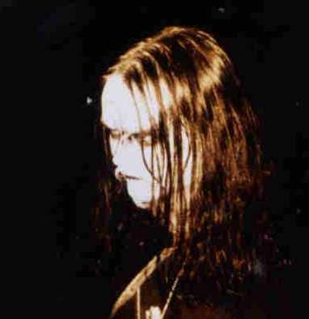
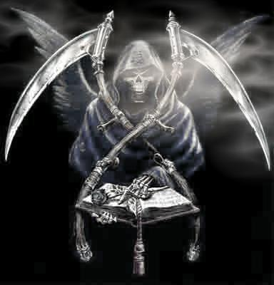
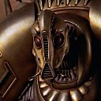
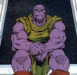
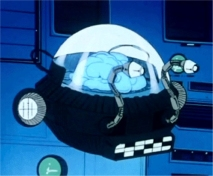

Forums galactiques > Assemblée Galactique : diplomatie officielle > Présentations
Pages : 1 2 ... 23 24 25 ... 31 32
| ocean Respect diplomatique : 708  12/02 ETU 20:47 | Score : 0 Détails Adresse toi directement à Morteur
Voila c'est rapide , direct et efficace Hopopopopopop | ||
| Cassandra Respect diplomatique : 316  12/02 ETU 20:49  | Score : 0 Détails Reformule ta demande à la Taverne Galactique, se sera un lieu plus approprié je pense pour en discuter.
Bienvenu à toi et si jamais tu as des soucis, envoie-moi un Mp. Bonne chance! | ||
| Lord ThO Respect diplomatique : 16  12/02 ETU 20:50 | Score : 0 Détails Merci a vous deux. Ocean, j'ai suivi vos conceil, un mp à morteur
| ||
| Blackwood Respect diplomatique : 18  23/02 ETU 19:16 | Score : 8 Détails Un léger courant d'air traversa la salle, indiquant qu'un commandant venait de franchir les portes. La singularité de ce coup de vent était qu'il apportait une odeur de décrépitude, une odeur d'humidité et de poussière en même temps. Une odeur de caveau.
Un homme entra. Il était d'une pâleur cadavérique. Ses longs cheveux noirs tombaient sur ses épaules et cachaient partiellement son visage où brillaient deux grands yeux verts comme l'absinthe. Il portait un long manteau noir, qui était posé sur ses épaules. Sa chemise était d'une coupe ancienne, et aussi noire que le reste de ses vêtements. Il boitait légèrement et une canne noire à pommeau d'argent en forme de crâne rythmait chacun se ses pas. Derrière le personnage en venait un autre, un homme mal rasé, sale, habillé d'une robe de bure. Il tenait un livre dans une main et portait une bouteille et une coupe dans l'autre. Le premier personnage s'assit à un place vacante, attendit que l'autre lui verse dans la coupe de métal ornementée un liquide vert. Il but une gorgée avant de parler aux commandants présents qui le dévisageaient: Bonsoir, commandants. Je suis Edward Blackwood. Je suis gouverneur de la planète In Sorte Diaboli, sous le titre d'Empereur. Elle gravite autour d'un soleil minuscule, qui en fait une terre sombre, froide et inhospitalière. Il y vit de nombreuses espèces de la nuit, en plus de petits groupes d'humains, ceux-ci vivant tous dans une semi-misère. Le gouvernement central est situé dans l'unique ville de la planète, Dimmrstadt. Une magnifique ville, en vérité. Les murs l'entourant, tout comme le Palais imperial sont construits de la pierre la plus noire, qui reflète les jours de beau temps les quelques rayons de soleil. Dans les grandes rues marchent humains, vampires et êtres de toutes sortes, vivant en relative paix derrière la sécurité des murs. Blackwood avait pris un air rêveur. Il se ressaisit: J'ai été contacté par les autorités de recensement de Newdeun il y a peu de temps, et j'ai décidé de me faire connaitre auprès de vous. Il est agréble de voir un vrai soleil de temps en temps. Il reporta l'attention sur son verre d'absinthe, le dégustant à petites gorgées, ses grands yeux verts scrutant l'assemblée. | ||
| Silas Burke Respect diplomatique : 11  25/02 ETU 20:03 | Score : 11 Détails Juste derrière le sombre sire Blackwood entra un homme de haute taille.[Soundtrack: Marche imperiale, S.W.] Il s'avança entre les bancs de l'assemblée à pas lourds qui résonnaient entre les hauts murs:
*BOM BOM BOM* Il s'arrêta. *BOM* Le personnage jeta un regard en coin à la salle et fit un rapide pas en avant, esperant que persone n'avait remarqué. Il était vétu d'une redingote bleue ouverte, dont les boutons dorés resplendissaient. Le smanches de sa chemise, trop longues, pendaient un peu sur ses mains. Il portait des hautes chausses et un pantalon qui semblait un numéro trop petit. Il avait sur la tête un chapeau à cocarde et sur le visage un sourire rayonnant. Satané enregistrement. Je me disais bien que c'était quatre pas...hum Bonsoir, Origine. Je suis Silas Burke, roi du royaume Python. Je viens d'accéder à ce poste parce que mon oncle est tombé sur la marche que j'avais sciée...euh est bètement tombé de cheval. Hm. Voilà. Et je me suis rendu ici, parce que mon oncle de son vivant isait qu'il ne voulait jamais avoir affaire au ramassis de crapules qu'était le gouvernement d'Origine...Hum. Voilà. Merci de votre attention. Il ressortit prestement, les lourds pas résonnant dans les couloirs de l'Assemblée. HRP:Quelqu'un sait-il comment écrire en vert clair? | ||
| Mendax Respect diplomatique : 201  02/03 ETU 19:42 | Score : 7 Détails Salutation à tous,
Je me nomme Mendax. Commandant des sans cœur. Si j'ai bien lu le titre, il faut se présenter ? Moi, ma vie est très simple et elle n'est pas fabuleuse. Voila ! Finit ! Vous dites........ Vous dites que se n'est pas un rôle play intéressant, car c'est hors sujet ? Ah bon ! Car le titre c'est présentation et non raconte ta vie ! J'ai fait comme tout les Commandants qui sont passés avant moi : je me suis présenté. Comme ça, les Commandants de cette galaxie, me connaissent. Amicalement Le Commandant des sans cœur. (Roulement de tambour) Mendax Ps : Ne me saquer pas trop fort quand même. | ||
| Squikirius Respect diplomatique : 17 02/03 ETU 22:11 | Score : 8 Détails Pendant que tout le monde salue les nouveaux arrivants, une ombre s'engouffre entre les battants de la porte qui se refermait.
Un garde:" Oh! y a une bête qui est rentrée! Sors de là avant qu'on te blesse..." Mais la boule de poils redressa la tête à la hauteur du plaston du garde. "Ecoute, tu m'as l'air plutôt brave quoique limité dans ta tête; donc pour cette fois ça passe, mais la prochaine fois que tu t'avises de me confondre avec une peluche ou autre bestiole, je te brise la nuque dans ton sommeil...Grrrr!!(montre ses petites canines)" L'altercation avait attirée l'attention sur le nouvel arrivant "Je vous en prie ne vous arréter pas pour un simple Squigg comme moi.J'étais seulement venu vous avertir que Squikirius, le Marchand, moi même, était de retour. Sachez que je viens récemment de m'implanter sur une planète, et qu'en tant que membre de la Guilde, j'offrai mes services à quiconque les réclamera." Sur ce, le Squigg salua l'assemblée et ressortit, lançant un regard noir au garde. | ||
| Ender Wiggin Respect diplomatique : 74  14/03 ETU 19:50 | Score : 1 Détails [HRP]Up[/HRP]
| ||
| KingofRedDragons Respect diplomatique : 11  14/03 ETU 19:57 | Score : 4 Détails Ma Satarn,
Mes salutations dans ma langue, je suis Chimérak, je suis le Chef du Conseil Chimérak,je suis venue pour reconstruire ma civilisation,car nous avons du quitté notre galaxie natal(lisez mon histoire si voulez plus d'infos). Voila,je me suis présenté. Arior Corm. | ||
| Sorloth Respect diplomatique : 8  15/03 ETU 18:21 | Score : 2 Détails Un personnage de haute taille, vêtu de noir, de longs cheveux blonds tombant sur ses épaules larges, entra dans l'AG en poussant les deux lourds battants de porte. Son pas résonnait sur les dalles usées et pendant qu'il marchait, le silence qui s'était fait à son entré fut troublé par des dizaines de chuchotements. Le personnage alla s'installer devant le micro et regarda l'assemblée avant de prendre la parole d'une voix grave et puissante:
Commandants, commandantes d'Origine, bonsoir. Je suis Sorloth-Azerat-Nirilfeïs, seigneur de la planête Gehennah. Je viens d'en prendre possession, ayant été récemment réveillé d'un sommeil long d'environ deux siècles. Il me semble que certains d'entre vous reconnaissent en moi certains traits de famille avec d'autres commandants, ma famille n'est pas passée inaperçue, du moins, je l'espère pour eux. Je leur demande de me contacter au plus vite, car j'ai beaucoup de temps perdu à rattraper. Merci de votre attention. | ||
| Romain Respect diplomatique : -7  15/03 ETU 19:54 | Score : 4 Détails Un rire monstrueux résonna.
MWA HA HA HA HA HA !!! Je me présente, mon nom complet est Romain Bowser King Koopa ET JE SUIS ICI POUR CONQUERIR L'UNIVERS ! Mais non, MWA HA HA HA HA kof kof J'plaisante ! Je veut faire revivre ma très ancienne et puissante race ! LES KOOPAS VAINCRONT !!! ET VIVE LA BIERE ET LE SAUCISSON !!! MWA HA HA HA HA HA !!! | ||
| l'impitoyable Respect diplomatique : -1  15/03 ETU 20:52 | Score : -1 Détails Salut,
Je me nomme L'Impitoyable j'ai decouvert le jeu grace a kueller.J'espère gagner votre estimedans ce jeu. | ||
| Traziel Respect diplomatique : 46  15/03 ETU 21:04 | Score : 2 Détails Le fait d'être le dirigeant de votre peuple est un jeu pour vous?...
Commandant, vous feriez mieux de prendre cela au sérieux si vous voulez mon avis... | ||
| Mondochawan Respect diplomatique : 18  16/03 ETU 14:36 | Score : 3 Détails
Un enorme humanoide robotisé s'avançat dans l'assemblée. Son pas était lourd et pesant, il avançait péniblement. Et il prit la parole: _Chers autres peuples de la galaxie, je représente mon monde, le Mondochawan, et je viens en paix. Je viens ici pour annoncé que dans exactement 200 ans, le mal apparaitrat et tenterat de détruire tous les vies de la galaxie. Mais n'ayez crainte, nous avons notre possetion, l'arme qui pourrat vous défendre (((Et non!!! Aucune armée du mondes, même reunis, ne peuvent l'arreter, le mal engendre le mal, c'est bien connue!!!))). Sinon nous sommes un peuple pacifiste et marchand, et encore neutre dans tous les conflits existanciels. Petite pub personnel :Et notre magasin ouvre bientot, venez nombreux aux Mondomarhawn... | ||
| thorgal Respect diplomatique : 5  18/03 ETU 09:43 | Score : 5 Détails Bonjours à tous, je suis le commandant Thorgal, je représente de la fondation, mon peuple et moi somment des chercheurs.......
| ||
| scaum G0 Respect diplomatique : 6  18/03 ETU 12:29 | Score : 3 Détails Au fond de la salle, un homme se leva.
Il marcha vers l'avant, monta sur l'estrade et déclara à haute voix: "Chers commandants, chères commandantes, je me nomme scaum G0 et je suis représentant." | ||
| roomi Respect diplomatique : 158  18/03 ETU 12:37 | Score : 2 Détails roomi,toujours grace au logiciel espion ne pouvait s'empécher de crier sur son écran...:
et la courtoisie alooors!!!! | ||
| Dr Simon Wright Respect diplomatique : 7  18/03 ETU 14:01 | Score : 7 Détails Bonjour à tous les commandant de la galaxie d'origine,
Je m'appelle Simon Wright et j'étais jadis un homme comme les autres. Maintenant je ne suis plus un homme mais un cerveau vivant, enfermé dans une caisse de métal, nourri de sérum au lieu de sang, pourvu de sens et de moyens de locomotion artificiels. Mon corps, qui a connu les plaisirs et les souffrances de l'existence physique est depuis longtemps tombé en poussière. Mais mon esprit continu de vivre, brillant et intact.==>je l'espère en tous cas!!! Je suis le meilleur ami de ... et bien personne pour l'instant. J'ère dans la galaxie à la recherche d'une coalition qui voudrais d'un vieux docteur faisant parti des plus grands savants de la galaxie. Aujourd'hui, j'ai accumulé un savoir inégalable consacré à la recherche. Souffrant d'une maladie incurable, j'ai décidé qu'avant que la mort ou la vague magnétique me prenne de m'essayer en commerçant. Hrp == L'appel : Je suis guildien et scientifique, je cherche une coalition me permettant de me développer. Je recherche aussi un soutien financier. J'espère que mon appel aura était entendu par les respectable commandant que vous représentez | ||
| Eliad Gadil Respect diplomatique : 184  18/03 ETU 14:39 | Score : 1 Détails Bonjour à toi petit cerveau en suspension enfermé dans une boite qui se nourit de litium. Si tu veux une aide, développer tes sciences tu devras...
| ||
| Shuffle Respect diplomatique : 5 18/03 ETU 14:43 | Score : 5 Détails Shuffle avançait lentement dans l'assemblée, il tenait un paquet de chips dans sa main gauche, et un verre de rhum dans la droite. Il regardait les autres commandant d'un air moqueur. Une fois arrivé au centre de l'hémicycle, celui-ci leva son verre :
Bonsoir hommes, femmes, enfants, esclaves, esclavagistes, bébés, et toutes autres espèce non-recensés dans mon dictionnaire. Je suis Shuffle, le semeur de trouble. Grâce aux sciences avancées de Khainos je puis venir ici en ce jour. Voyez-vous, nous venons de découvrir le télégrapho-méta-transporteur, permettant un voyage dans l'endroit de mon choix. Malheureusement mon harem personnel n'a pu passer par cette machine. Donc je me retrouve seul ici et sans personne. Si jamais vous souhaitez une séance de massage, ou autre chose, appelez moi sur mon X-Com, je serai ravi de vous rencontrer. Les femmes hyper-poilues, hommes et animaux seront acceuillis par un coup de pied au derrière. Shuffle but une gorgée de sa liqueur, puis légèrement sobre il retourna prendre sa place à coté de Nurra qui commençait à le toucher avec son index pour voir si celui-ci réagissait, on aurait dit qu'il s'en était allé pour le monde d'Alice au pays des Saucisses. |
Pages : 1 2 ... 23 24 25 ... 31 32
Forums galactiques > Assemblée Galactique : diplomatie officielle > Présentations